LINKIN PARK
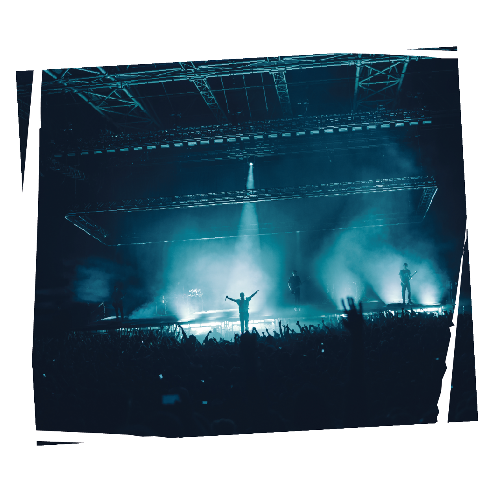
Linkin Park is performing a set from
their roots when getting into the music
industry from albums like Hybrid Theory
to Hunting Party. They will be lighting
up the stage with Chester and Mike
paving the way as the final act of the
event for Warp Tour.
After their latest album drop of 2017,
One More Light they will be providing the
audience with a jam packed nu-metal
performance to the diverse lineup of
artists.
Chester with the rest of the band
have received much criticism for
their latest album release, they're
taking this feedback as fuel to dig
deep and give a performance that
will rock the crowd to their core,
after much time of being cooped
up in the house, like many of us
have been they have crafted a
performance that will go down in
music history.
~ Quote by Rock Flock Magazine
VENUE
GREEN DAY
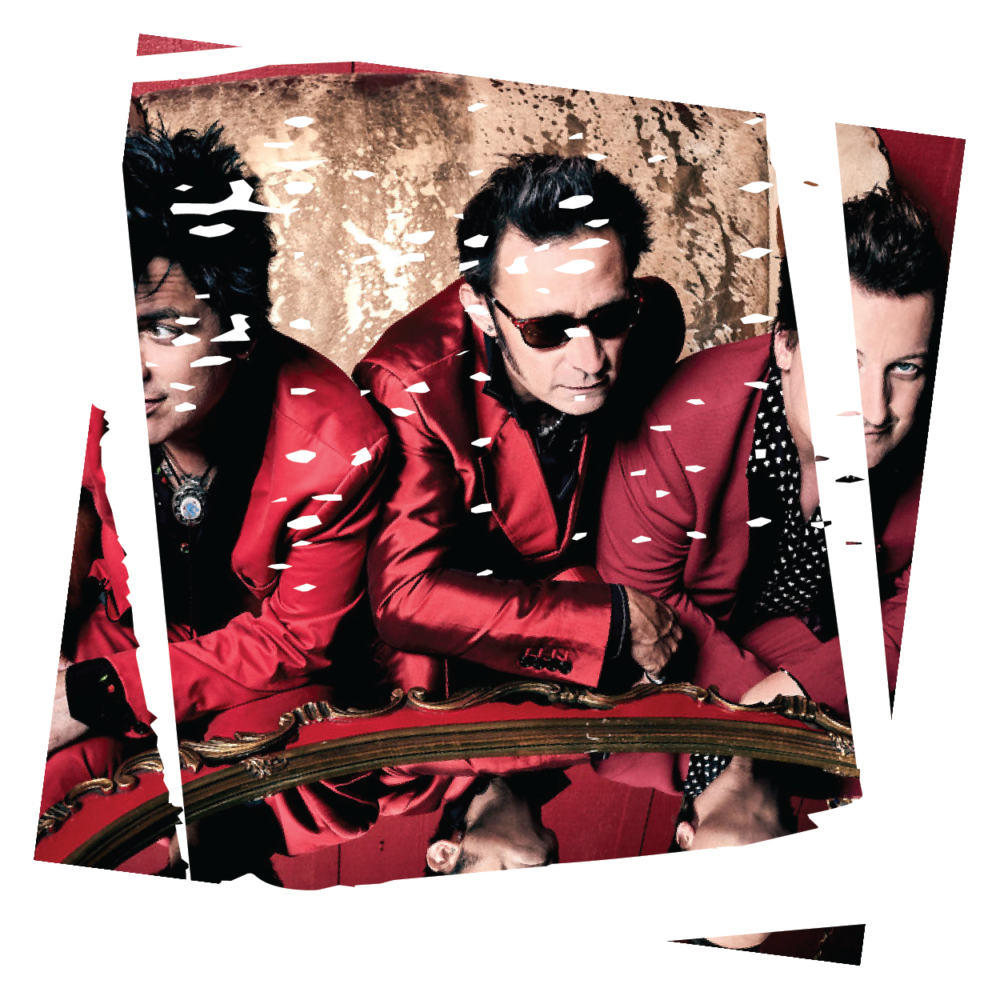
Green Day is bringing an a chaos fueled
performance to the big stage with hits
from their older albums like Dookie and
Insomniac to albums that revolutionized
America like American Idiot and 21st
Century Breakdown. Followed up by
recent hits from their newest album, the
Father of all Motherf******.
With Trey Cool on the Drums, Bass Guitar
played by Mike Dirnt and Billy Joe Armstrong
leading the bastards that conquered the world
with their punk pop rock.
The band has been working hard to
promote their latest album and overall
they have gotten a lot of praise since it's
debut album release. Green Day hopes
to continue this streak performing at the
Rolling Stones Bandemic Warp Tour!
VENUE
POST MALONE
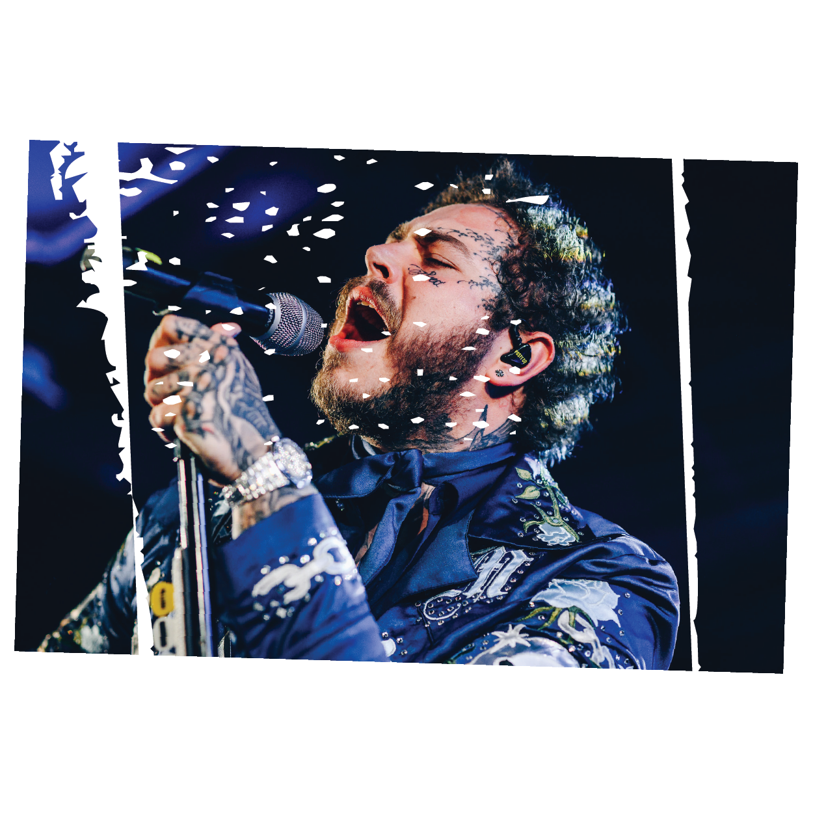
Young rapping prodigy from the Lone Star
State of Texas. Post Malone is bringing his
newest album Goodbyes. He will be lighting
up the stage with feature rapper and hip hop
artist Young Thug. Post Malone brings a
inviting presence to any concert venue and
his inclusive and free living character gives
the audience a performance they surely won't
forget in their lifetimes.
VENUE
LIL UZI VERT
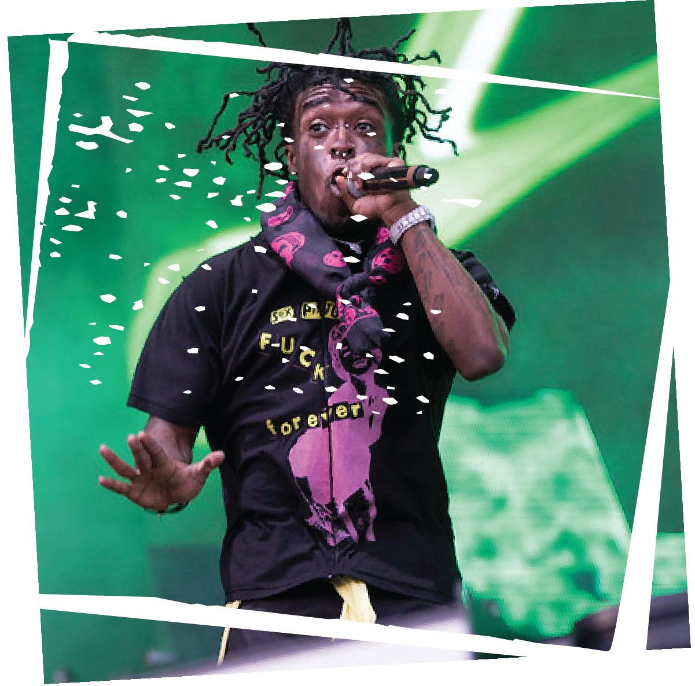
The emo rapper makes his appearance
once more sporting his newest album,
Eternal Atake, sponsoring fresh new beats
and pulsating rhythms that will keep the
crowd begging for more! Using 80's style
synths and added rock and roll where
appropriate, he is hoping to give the
rap genre a new face and a new sound
all together.
VENUE
BLINK 182
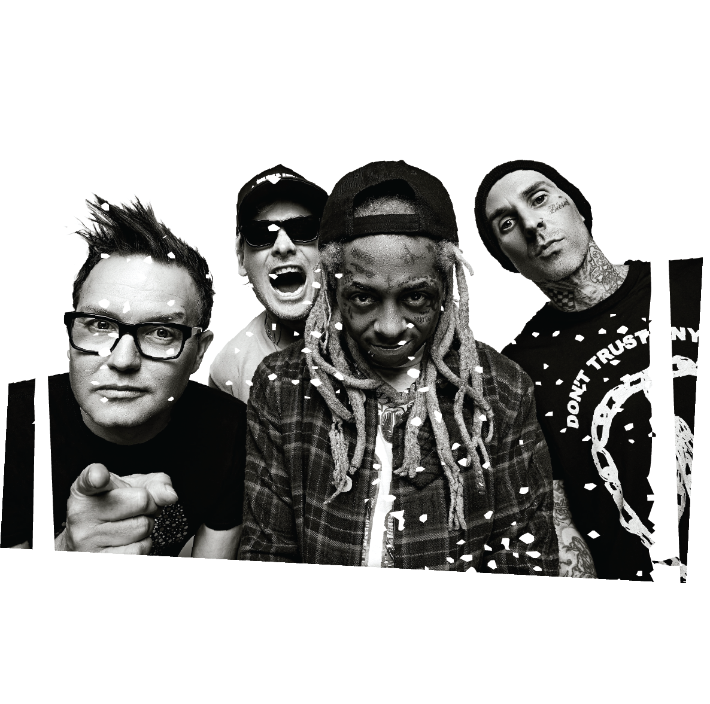
Listening to the emo punk rock band
of the Blinking of 182 will send you into
a nostalgic, memorializing state if mind
that fills you with both joy and sadness
all at the same time making you realize
you're not alone in your coming of age
struggles that many of ourselves go
through at one time or another.
VENUE
RATM
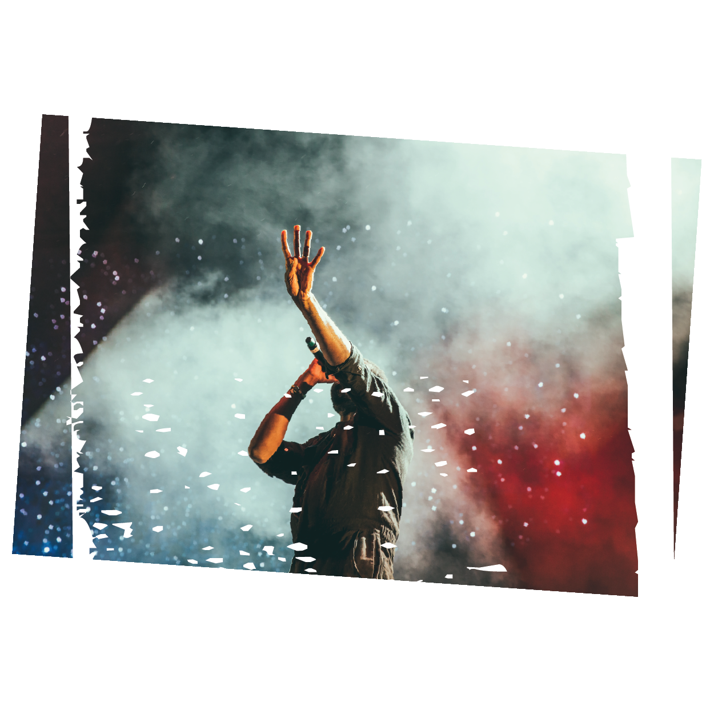
Loud drums, raging guitars and thumping base, the
rage is coming to the Warp Tour in a angry and fresh
comeback way in the likes which you never seen before!
They have been gone for a while since the 90s but hope to
make a comeback that will give they a rebirth in the hard
rock industry in which they will continue to throw singles out
to keep giving us the jamming tunes we love from them.
VENUE
THE RACONTEURS
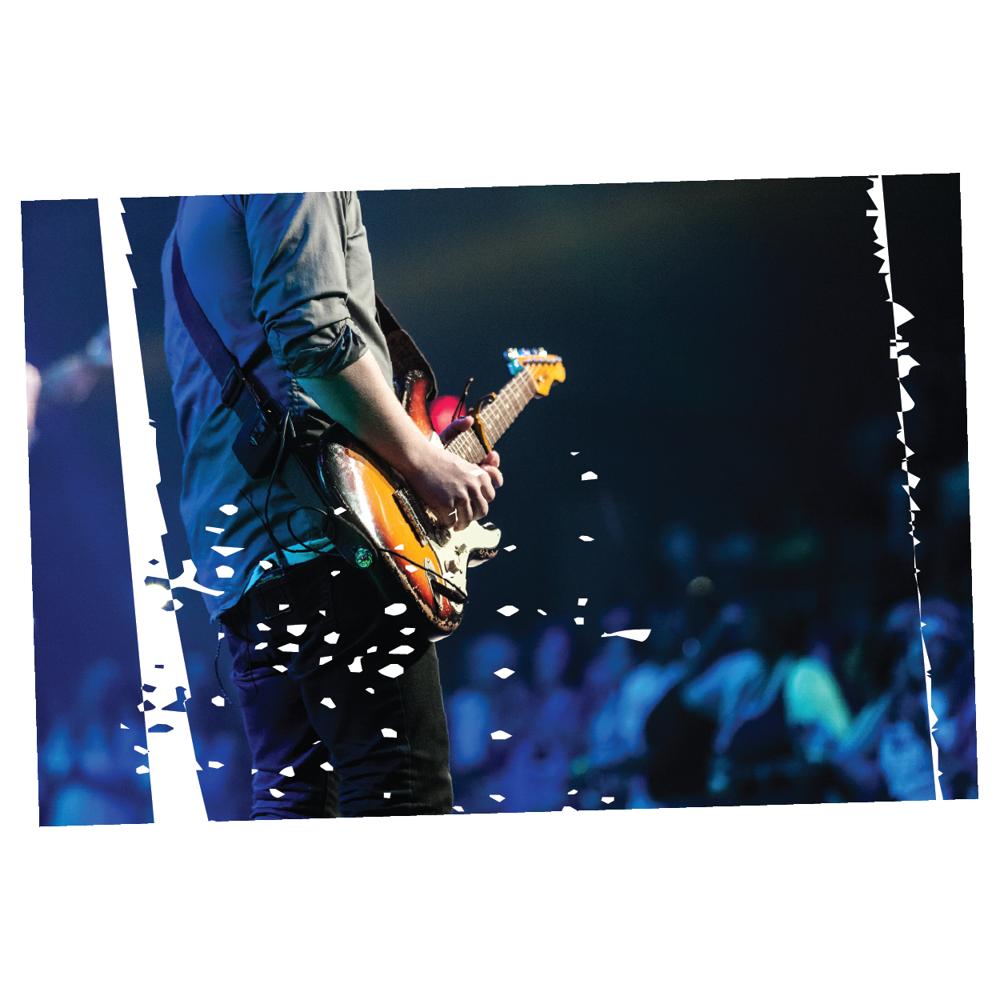
The "Teurs" are coming to the Tour! With their low impact notes that
give a lot of emotion in songs like Steady as She Goes and Consolers
of the Lonely we feel these guitar rifts unlike anything in Alternative
music history. Jamming out with every note strung, we cannot wait
to see what they have in store for the Warp Tour goers. We are
anticipating a great show that will bring the crowd to their feet!
VENUE
LIL WAYNE
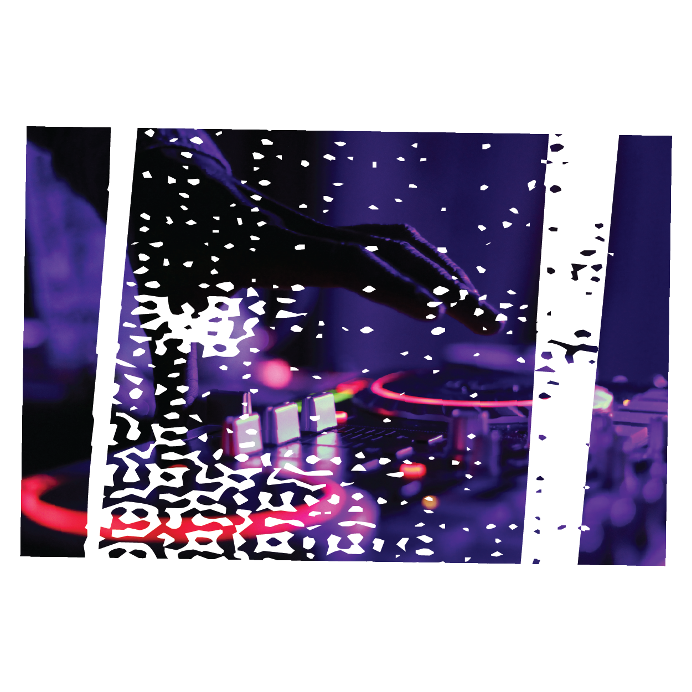
Lil Wayne hopes to reconcile for
leaving his previous tour with 182
just a tad too early. In this he hopes
to be in a better mind set to fully
perform his venue as promised to
his fans all the while ago with his
newest album Carter V.
VENUE
FALL OUT BOY
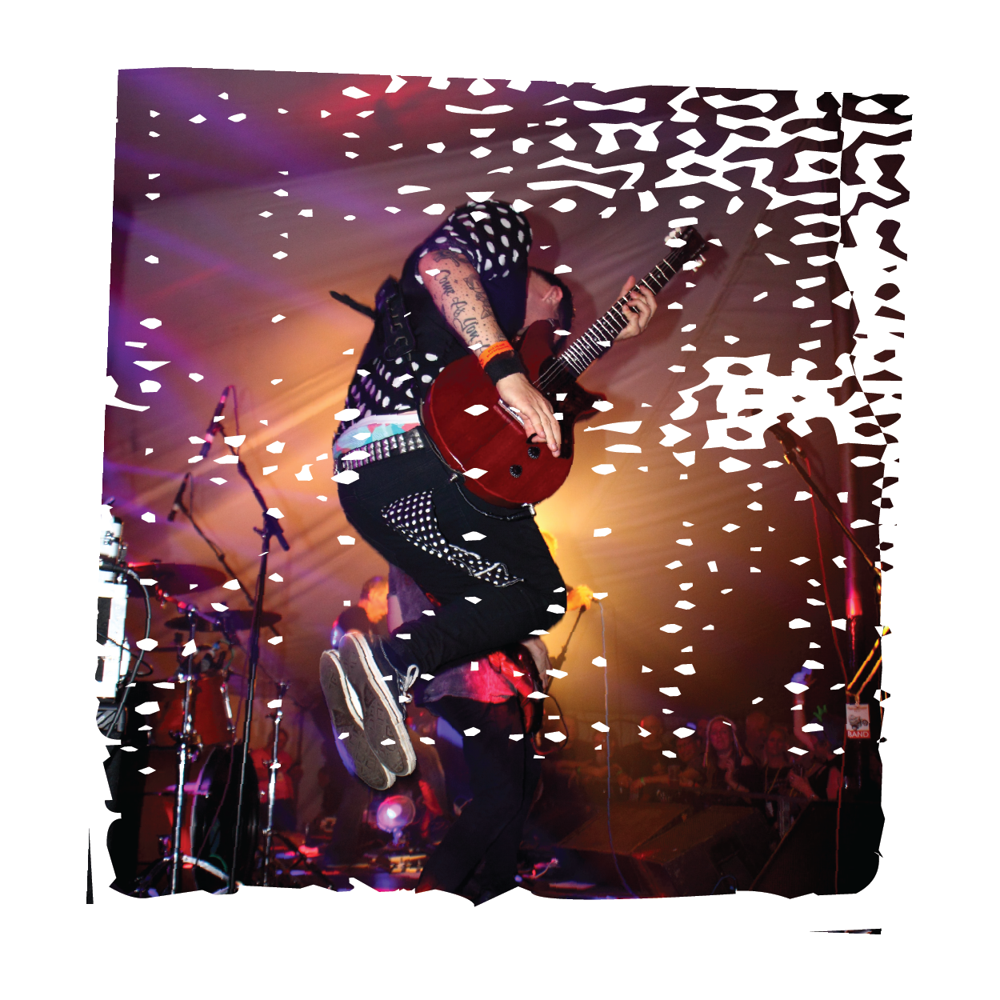
My Songs Know What You Did In The Dark, so light em' up!
The Boys are back in town to light up all of us with their
pop alternative rock melodies that get us motivated for
absolutely anything. They will be performing a lot of their
popular singles being the opening act to the Tour Venue.
They will set the stage for the rest of the acts getting the
audience ready and inspire to want even more.
VENUE
WIZ KHALIFA
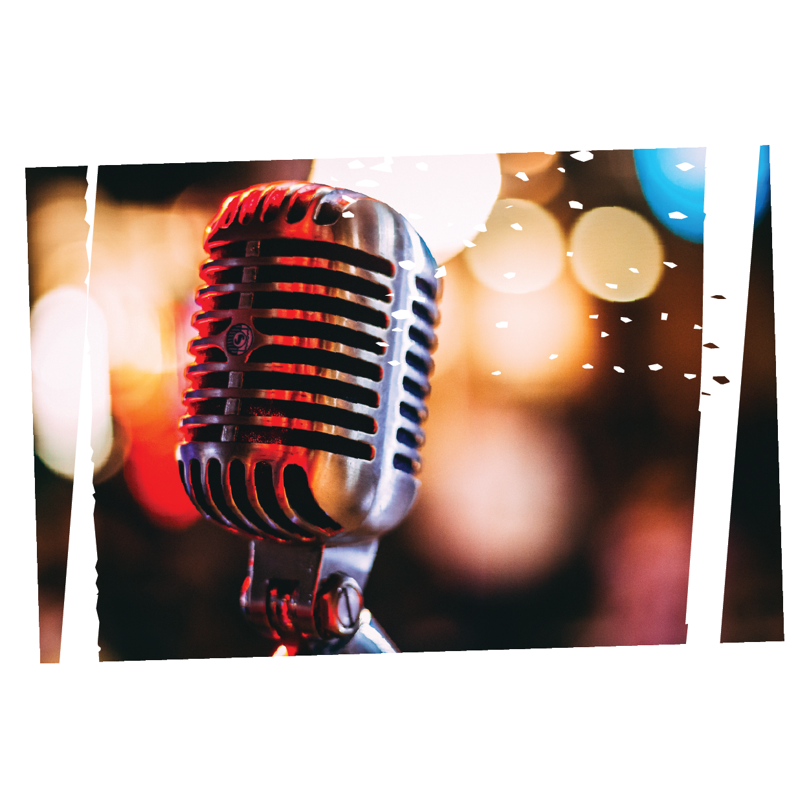
Linkin Park is performing a set from
their roots when getting into the music
industry from albums like Hybrid Theory
to Hunting Party. They will be lighting
up the stage with Chester and Mike
paving the way as the final act of the
event for Warp Tour.
After their latest album drop of 2017,
One More Light they will be providing the
audience with a jam packed nu-metal
performance to the diverse lineup of
artists.
Chester with the rest of the band
have received much criticism for
their latest album release, they're
taking this feedback as fuel to dig
deep and give a performance that
will rock the crowd to their core,
after much time of being cooped
up in the house, like many of us
have been they have crafted a
performance that will go down in
music history.
VENUE
MY CHEMICAL ROMANCE
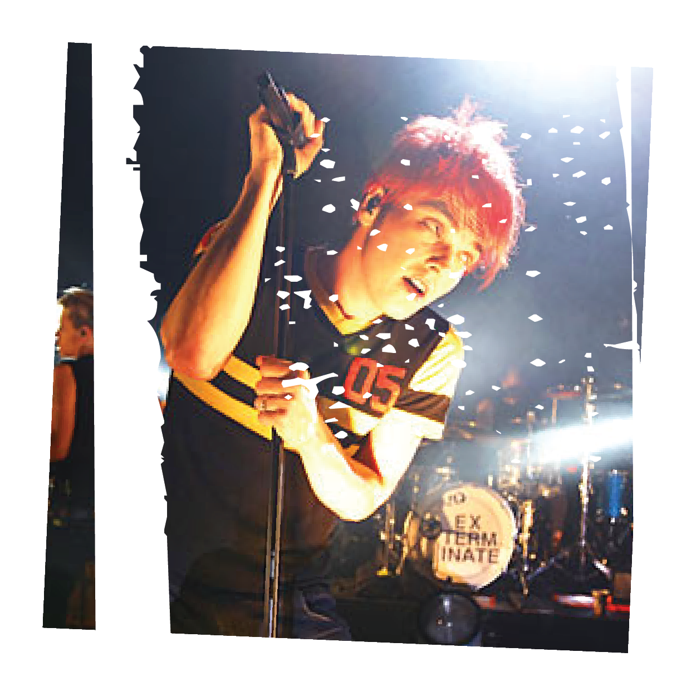
When I was a young boy, my father took me to see Warp Tour! The band
who conquered the early 2000s and made every emo persons voice heard.
MCR is back and after reuniting once more to celebrate new album releases in
Fall 2020, they are looking to bring the Black Parade back to reality in making
sure that that Helena doesn't die and making sure everyone in the crowd
sings it for the boys and sings it for the girls, sings it so loud the whole world
hears your voice.
The band had been broken up for the past few years and the members went
on their own ways doing their own things for a while. Lead singer _________
had been making comic book in his spare time but always continue conducting
music and writing it since.
VENUE